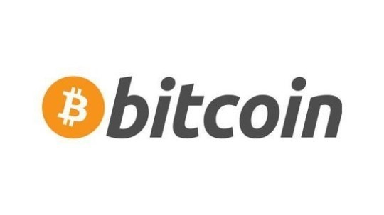
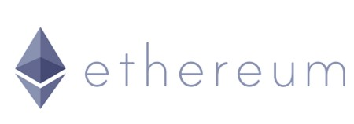
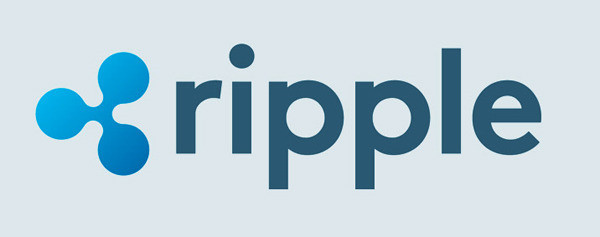
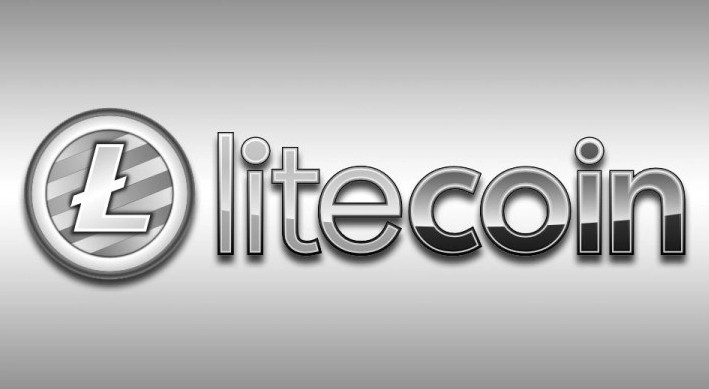
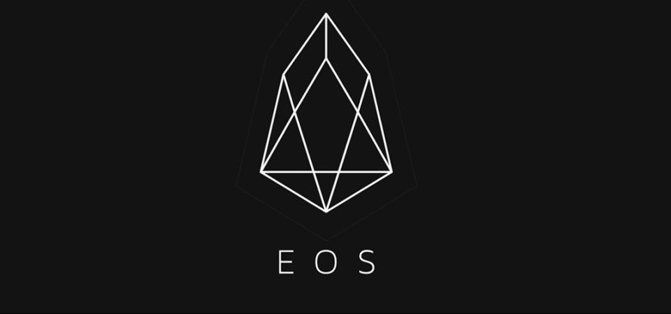

명칭 : 비트코인(Bitcoin)
ISO 4217코드 : BTC (비표준), XBT (비공식)
도입일 : 2009년 1월 3일
개발자 : 사토시 나카모토
분류 : 암호화폐
발행방식 : PoW(Proof-of-Work, 작업 증명)
채굴
비트코인 지갑을 만들고 암호를 풀어야 한다. 일반PC 1대 기준 5년의 시간이 소비된다.
채굴 풀(mining pool)을 사용하면 계산성능 일부를 암호 해독 과정에 보태고, 완료될 시 기여한만큼 나눠받을수
있고 PC의 성능이 좋을수록 더 많은 비트코인을 얻는다. 채굴 풀에 가입 후 프로그램을 다운받아 자기계정에 연동해야 합니다.
특징
- 자체 강화 방식
- 오프라인 방식
- 양도 가능
- 분할 및 통합 가능
- 익명 지불 가능

명칭 : 이더리움(Ethereum)
자체 통화의 기호 : ETH(비공식 ISO 4217 코드)
출범 : 2015년 7월 30일
개발자 : 비탈릭 부테린
분류 : 암호화폐
발행방식 : PoW(Proof-of-Work, 작업 증명) 채굴
채굴
이더리움 지갑을 채우기 위해서는 본격적인 채굴작업에 나서야 합니다. 일반PC 한대로 이더리움 암호를 풀기 위해서는
몇년이 걸릴지 모른다. 이것도 마찬가지로 채굴풀을 이용한다. 예전과 달리 블록을 생성하기 위해 필요한 컴퓨팅 블록을
채국하고 기여한만큼 보상을 받는다. 즉 채굴의 난이도가 갈수록 증가해서 개인이 채굴하는 방식으로는 경쟁력이 없어져
협업을 하여 공헌도에 따라 보상을 분배받는 방식이다.
특징
- 비트코인과 달리 오픈형 플랫폼으로 분산화된 다양한기능
- 프로그래밍 언어로 작성된 모든 종류의 응용 프로그램 독립적 프로토콜
- 스마트 컨트랙트
- GPU 채굴을 기반으로 한 poW방식 채택

명칭 : 리플(Ripple)
기호 : XRP
출범 : 2012년
개발자 : Ryan Fugger
분류 : 국제송금 시스템 및 암호화폐
발행방식 : 리플프로토콜 합의알고리즘(독자 알고리즘)
채굴
리플은 다른코인들과 달리 사전에 채굴을 하거나 한 것이 아니라 코인을 다 만들어 놓고 시장에 유통시킨 경우 이다
코인 발행량이 너무 많아서 코인 가격이 다 올라도 늦게 오르는 경우가 있다.
특징
- 다른 화폐보다 국제결제 속도가 빠르다. (약 2초)
- 송금시 타이핑 오류를 제외하고 금융사고 발생횟수가 전무하다.
- 수수료가 채굴자에게 가는게 아니라 수수료만큼 총량이 그대로 줄어들어 모두의 이익으로 귀속되는 최초화폐
- 주로 XRP로 표기되어 있고, 은행에서 nostro 계정에 미리 자금을 투입하지 않고도 요구되는 유동성을 실시간 확보가능
- Ripple labs inc.의 블록체인 네트워크는 서구 은행권에서 아주 관심있게 참여하고 있는 네트워크이다.

명칭 : 라이트코인(Litecoin)
ISO 4217코드 : LTC
출범 : 2011년 10월 7일
개발자 : 찰리 리(Charlie Lee)
분류 : 암호화폐
발행방식 : PoW(Proof-od-Work, 작업증명)채굴
채굴
비트코인과 마찬가지로 채굴과 구매를 통해 얻을 수 있는 암호화폐이다. 최대 채굴량은 8,400만 개로 비트코인의 약 2,100만 개보다 4배 더 많다.
라이트코인은 간편한 채굴이 가장 큰 장점이다. 비트코인은 해시값(암호화 거래기록)을 가진 파일인 블록을 해제해야 하는데, 이 과정이 매우 복잡하며
고성능의 컴퓨터가 필요하다. 그러나 라이트코인은 새로운 암호화 알고리즘인 스크립트를 사용해 블록을 해제하는 복잡성을 상대적으로 줄였다. 거래 속도는 라이트코인이 2분 30초로,
10분 걸리는 비트코인보다 4배 빠르다. 이 밖에도 금색의 암호화폐인 비트코인과 달리 라이트코인은 실생활에서 일상적으로 거래되는 은화를 나타내고자 은색을 사용하였다.
특징
- 타 화폐에 비해 채굴이 비교적 쉽고 거래속도가 빠른 장점이 있다.
- 비트코인 코어에 비해 적은 유저층과 커뮤니티를 갖고 있어 상대적으로 의견충돌이 적음
- 그로인해 빠르게 개발방향에 대한 합의를 이루고 적용 세그윗(SegWit)을 도입한 것이 그 예시다.
- 통용 화폐량은 약 800만 달러로 비트코인의 약 7% 수준이지만 다른 파생 화폐인 피어코인, 네임코인 등과는 큰 차이를 보인다.
- 2017년 9월 2일 기준 1 LTC에 95,000원 수준이라 채굴 수익성이 매우 높아졌다.
- 2017년 11월 16일, 라이트닝 네트워크 상에서 비트코인과 라이트코인의 스왑이 성공했다.

명칭 : 이오스(EOS)
기호 : EOS
출범 : 2017년
개발자 : block.one
분류 : 암호화폐
발행방식 : DPOS(Delegated Proof-Of-Shake)
채굴
이오스 생태계 내에서 채굴은 절대적으로 불가능합니다. 작업증명(PoW, Proof of Work) 합의 알고리즘이 현재 적용되고 있는
이더리움과 달리 위임지분증명(DPoS, Delegated Proof of Stake)이나 거래기반지분증명 프로토콜에서는 블록을 채굴하지 못 하게 되어있습니다.
하지만 이더리움을 채굴하여 그것을 이오스로 바꿀수 있다. 이방범은 이오스를 채굴하는 일반적인 방법입니다.
특징
- EOS는 블록체인 프로젝트로서, 최초의 블록체인 OS를 표방한다.
- EOS는 DApp(Decentralized Application)을 개발하고 구동하기 위한 플랫폼을 개발하는 프로젝트이다.
- EOS는 거래가 일어나면 이것이 0.5초만에 처리된다고 보면 됩니다. 비트코인은 10분, 이더리움은 14초가 소요됩니다.
- 용량이 크고 목표 TPS는 100만이며, 비트코인 대비 14만배 이더리움 대비 6만배 이상 많은거래를 동일내에 처리가능
- 타 화폐는 수수료를 지불해야 하지만 EOS는 명시적인 수수료가 존재하지 않고 인플레이션을 통해 간접적으로 지불.